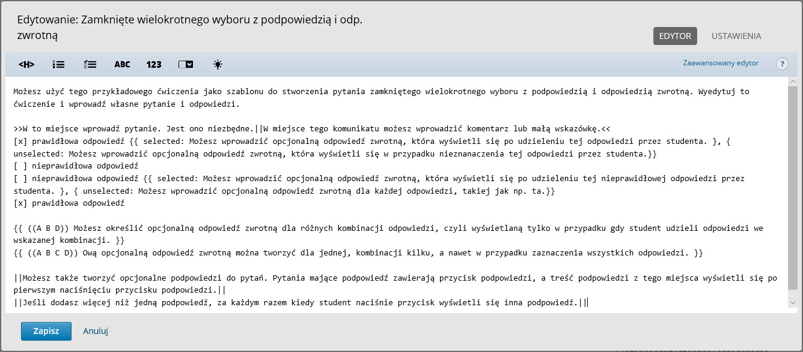
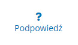

Podpowiedź i odp. zwrotna
Składnia OLX pozwala na wzbogacenie każdego pytania o podpowiedzi oraz złożoną odpowiedź zwrotną.
Przyjrzyjmy się jak wygląda szablon pytania wielokrotnego wyboru z podpowiedzią i odpowiedzią zwrotną:

Do każdej dostępnej odpowiedzi możemy dodać informację zwrotną uwzględniającą czy dana odpowiedź została zaznaczona czy też nie. Taką informację trzeba zawrzeć w nawiasach klamrowych korzystając przy tym ze słów kluczowych selected i unselected. Informacja po słowie kluczowym selected pojawi się tylko wtedy kiedy uczestnik zaznaczy daną odpowiedź i prześle pytanie do oceny. Z kolei informacja zawarta po słowie kluczowym unselected pojawi się tylko wtedy, kiedy uczestnik nie zaznaczy danej odpowiedzi i prześle pytanie do oceny. Na przykład:
[x] prawidłowa odpowiedź {{ selected: Świetnie! to jest jedna z prawidłowych odpowiedzi. }, { unselected: Przypomnij sobie pierwszy wykład w tej lekcji i zastanów się nad znaczeniem tej opcji.}}
[ ] nieprawidłowa odpowiedź {{ selected: Niestety to nie jest prawidłowa odpowiedź. }, { unselected: Bardzo dobrze, to nie jest prawidłowa odpowiedź na pytanie.}}
Złożona odpowiedź zwrotna
Składnia OLX pozwala także na przygotowanie złożonej informacji zwrotnej w zależności od tego jaką kombinację odpowiedzi zaznaczył uczestnik, np. inna informacja może się pojawić przy zaznaczeniu odpowiedzi A, B i D, a inna przy zaznaczeniu A, B, C i D. Informacje te opisujemy poniżej treści samego pytania i odpowiedzi korzystając z następującego schematu:
{{ ((A B D)) Świetnie, udało Ci się zaznaczyć wszystkie poprawne odpowiedzi! }}
{{ ((A B C D)) Prawie dobrze, jedna z zaznaczonych przez Ciebie odpowiedzi jest błędna. Wróć do lekcji nr 2, powtórz materiał w niej zawarty i spróbuj odpowiedzieć raz jeszcze. }}
Podpowiedzi
Możesz także tworzyć opcjonalne podpowiedzi do pytań. Pytania mające podpowiedź zawierają przycisk podpowiedzi:

Treść podpowiedzi z tego miejsca wyświetli się po pierwszym naciśnięciu przycisku podpowiedzi. Jeśli dodasz więcej niż jedną podpowiedź, za każdym razem kiedy student naciśnie przycisk wyświetli się inna podpowiedź. Nie zaleca się dodawania do pytania więcej niż 3 podpowiedzi.
Aby je dodać do pytania należy wpisać je na sam koniec pytania umieszczając je pomiędzy parą podwójnych pionowych kresek. Na przykład:
||Podpowiedź nr 1||
||Podpowiedź nr 2||
||Podpowiedź nr 3||
�